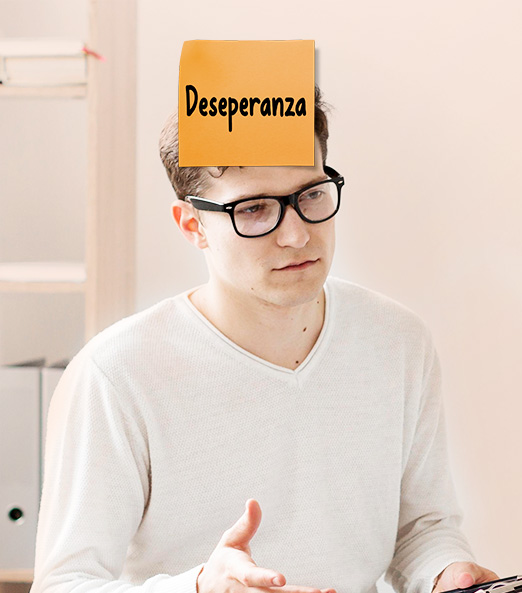
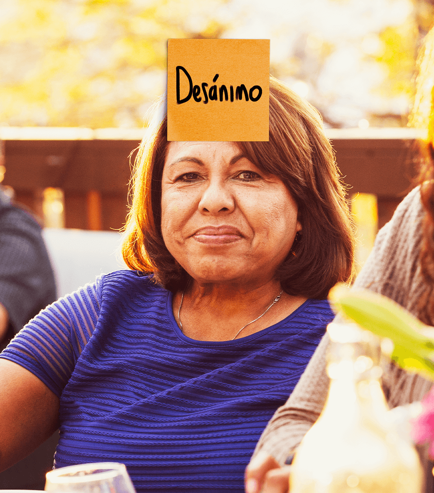

Los tratamientos disponibles para tratar los síntomas depresivos se tardan entre 4 y 6 semanas para hacer su efecto completo.
La depresión no es ser aburrido
La depresión es una enfermedad mental que afecta a más de 300 millones de personas y es la causa #1 de discapacidad alrededor del mundo, según la Organización Mundial de la Salud.
La determinan múltiples factores que afectan a una persona en diferentes aspectos de su vida, desde su estabilidad emocional hasta su aspecto físico.
Se trata de un trastorno mental frecuente caracterizado por un sentimiento de tristeza que se interpone en el desarrollo de actividades habituales como el trabajo o las relaciones sociales.
Si padeces depresión o crees tener alguno de los síntomas, estás a tiempo para recibir tratamiento, consulta a un profesional de la salud para más información.
¿De dónde proviene la depresión?
La depresión es el resultado de interacciones complejas entre factores sociales, psicológicos, y biológicos.
Origen biológico:
El origen biológico de la depresión continúa siendo un misterio, sin embargo, una de las teorías más populares es que es causada por alteraciones en los neurotransmisores cerebrales*, como la serotonina y noradrenalina. Estos neurotransmisores están asociados a los sentimientos de felicidad y bienestar, tal como lo afirma Janssen.
Otros factores:
Existen otros factores de nivel social y psicológico que tienden a que las personas sean más propensas a sufrir depresión. Por ejemplo, las personas que han pasado por circunstancias de vida adversas, como la muerte de alguien cercano, el desempleo u otros traumatismos psicológicos*, así lo afirma la OMS.
Descubre los síntomas
Las personas que sufren depresión experimentan múltiples síntomas, como el bajo estado de ánimo o la pérdida de interés al realizar ciertas actividades. Para diagnosticarse como depresión, la persona debe presentar 5 o más síntomas por un periodo de al menos 2 semanas.
Ansiedad
Se trata de la condición de una persona que experimenta una conmoción, intranquilidad, nerviosismo o preocupación.
Agitación psicomotora
Es la forma extrema de la inquietud o hiperactividad, caracterizada por el aumento de los movimientos no dirigidos a la consecución de un fin determinado.
Dificultad para concentrarse
También para recordar detalles o tomar decisiones.
Sentimientos de culpa inexplicables
Estas personas pueden sentirse desamparadas o que no valen nada.
Tristeza o estado de ánimo depresivo persistente
Este es uno de los síntomas más representativos de la depresión y usualmente se interpone con las actividades diarias.
Cambio significativo del apetito y alteraciones del sueño
Comer más o menos de lo usual o tener dificultades para dormirse o levantarse (insomnio o hipersomnia)

Escasa energía o fatiga
Es la sensación de cansancio extremo, agotamiento o debilidad que puede hacer que las tareas cotidianas se tornen más difíciles.
Pérdida de interés
Disminución de placer en actividades que normalmente se disfrutaban.

Pensamientos o actos suicidas
Pensar en el suicidio o en hacerse daño.
Antes de diagnosticar un cuadro de depresión, es importante pensar en otras posibles explicaciones para los síntomas como:
Tipos de depresión


Trastorno depresivo con ideación suicida
Las personas que sufren de depresión muy fuerte y presentan un mayor riesgo de hacerse daño que puede implicar un alto riesgo de muerte.
Estas personas experimentan tristeza, desesperanza, disminución del interés por actividades que antes disfrutaban y aburrimiento o poca energía.
Trastorno depresivo mayor
El trastorno depresivo mayor es la condición más recurrente dentro de todos los tipos de depresión.
Se trata de un desorden de ánimo muy común alrededor del mundo, sin dejar de ser considerado una enfermedad seria y grave. Se caracteriza por la aparición recurrente de un episodio depresivo mayor, que dura al menos 2 semanas y presenta cambios en el afecto y la cognición.
Los pacientes con TDM tienen 20 veces más riesgo de suicidio que el resto de la población, así lo establece Janssen.
Trastorno depresivo recurrente (distimia)
Se trata de un trastorno que dura al menos 2 años. Las personas diagnosticadas pueden sufrir episodios depresivos mayores, pero también presentar etapas en las que los síntomas son menos severos.
Depresión resistente al tratamiento
Se presenta en pacientes con trastorno depresivo mayor, cuando este no ha respondido a las dosis adecuadas de dos antidepresivos diferentes suministrados por un período de tiempo suficiente, que suele ser de seis semanas.
Depresión post parto
Las mujeres con este trastorno sufren de depresión mayor durante el embarazo o después del parto. Se caracteriza por la aparición de sentimientos de extrema tristeza, ansiedad y exhaustividad que interfieren con las actividades diarias de las madres y el cuidado de sus bebés.
Depresión psicótica
Esta forma de depresión ocurre cuando la persona sufre de episodios depresivos severos, pero, además, presenta alguna forma de psicosis, como la aparición de creencias falsas (delirios) o la visión de cosas que los demás no pueden ver (alucinaciones).
Trastorno bipolar depresivo
Es diferente a la depresión, pero hace parte de esta lista porque una persona que sufre de este trastorno experimenta episodios de muy bajo ánimo, lo cual se cataloga como una depresión mayor.
Fuente de tipos de depresión: National Institute of Mental Health
Depresión Resistente al Tratamiento
Uno de cada tres pacientes con TDM son resistentes al tratamiento. La depresión denominada Depresión resistente al tratamiento o DRT se presenta en los pacientes cuando los medicamentos estándar suelen brindar un alivio mínimo o nulo, ya que sus cuerpos no responden a las dosis adecuadas suministradas durante los períodos de tiempo suficiente (6 semanas), tal como lo establece Janssen.
Lo anterior presenta una carga preocupante para las personas que padecen este tipo de depresión y que requieren de una solución urgente para su enfermedad.
Sí hay esperanza para los pacientes con DRT
Se trata de una necesidad que existe hace 30 años, según Janssen.
Existen nuevos modelos de administración de tratamientos y fórmulas innovadoras que atacan distintas vías del cerebro y reducen los síntomas depresivos en tan solo 24 horas.
Esto sostiene una gran esperanza para todos los pacientes con depresión resistente al tratamiento, quienes tenían muy pocas opciones para el control y alivio de su sintomatología.
La depresión en cifras
Interactúa con la gráfica y descubre sobre la depresión en América.
País/ Casos totales de depresión/ Porcentaje de la población